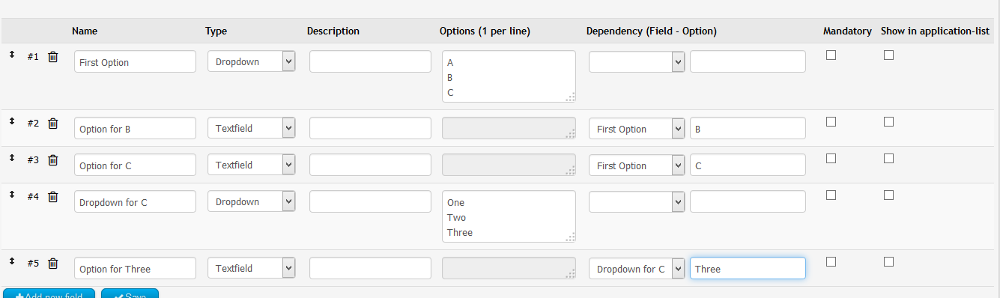

Guildrequest
Contents
Installation
Install the GuildRequest-Plugin in your Extension Management.
After the Installation, there are two links in your Menu:
- View applications: for registered user with appropriate permissions. Shows all Applications, gives possibilities to manage and to vote
- Write application: for guests only, because they do not need an EQdkp Plus Account for Writing an Application
Manage GuildRequest Form
Go to Admin-Panel, Extensions, Guildrequest, Manage Form to Edit the Form Applicants have to fill out.
Add new field
Click on the Button "Add new Field" to add a new field or heading.
- #2: ID of the field, here: 2. Needed for custom dependencies.
- Name: Name of the Field
- Type: Select what Type the field should be.
- Textfield: simple Textfield, single row
- Textarea: more space for Text, multiple rows.
- Dropdown: User can select an option
- Grouplabel: Closes the previous Group and starts a new one. Can be used to make the form more clear. No user input.
- Free text: Add some free text, e.g. for explaining something. No user input.
- Checkbox: Displays some checkboxes. User can check multiple ones.
- Radio-Buttons: Same as Checkbox, but user can only check one of them.
- Editor: Shows an BBCode-Editor, multiple rows.
- Descriptions: Text that is shown below the Fieldname. Can be used to explain what user should input.
- Options: One per line. Here you can define the options for Dropdown, Checkbox and Radio-Buttons.
- Dependency (Field - Option). Here you can set dependencies. Choose a Field and Option. Is the option of the selected field active, the current field will be shown.
- Mandatory: User has to fill out this field
- Show in Application-List: Display this field in List of all Applications. Helps you managing the List better, but showing to much fields makes it more confusing.
Dependencies
You can create dependencies, that means that some fields are shown only if choosen conditions are fulfilled.
Normal Dependencies
For each field, you can set a Dependency. Choose the Field and Option of the dependency field. If the choosen dependency field has the choosen dependency option, the field will appear. You can only use fieldtypes Dropdown, Checkboxes or Radio-Buttons as a Dependency, because these fields have defined options. 
{kind=link}
This results in:
{kind=link}
- First, only the green Level is visible (has no dependency)
- Second, Red Level appears if Option "C" has been selected of "First Option"
- Third, Yellow Level appears, because Option "Three" has been selected of "Dropdown for C"
Custom Dependencies
If the normal dependencies are not enough, you can use custom dependencies. Select "__Custom" as Dependency Field and enter as Option your own Conditions. You can access the Field-Values by using "FIELD" and adding the ID of the Field, e.g. FIELD10 or FIELD24. An Example Custom Dependcy is this:
((FIELD1 == "MyValueOne" && FIELD2 == "MyValueTwo") || FIELD3 == "MyValueThree")For Checkboxes, you have to use another format, as multiple values can be used by the user:
(FIELD1[Sunday] == 1 || (FIELD1[Tuesday] == 1)){kind=link}
Preview
To open a Preview of your form, click on the button at the bottom of the Form Page. The Preview is generated from the latest saved form. That means that you have to save your modifications first, before you open the Preview in order to get your latest modifications.
Notifications
If there are new Applications or new comments, you will be noticed in the Notification Center. But also, you can activate Notification Mails and/or PopUp as you like. To activate them, go into your personal Usersettings and click on the GuildRequest-Tab. There you will find the options.